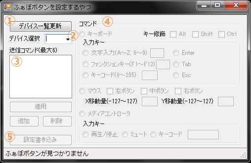

ふぁぼボタンのサポートページです
twitterで反響の大きかったあのデバイスです．
ほんとうは，mbed LPC11U24 互換のボードを内蔵したUSBデバイス開発キットです．
初期状態では，
「キーボード」「マウス」「メディアコントローラ」「汎用HID」
の4デバイスとして認識されるサンプルアプリケーションが書き込まれています．
つまり，
PCやタブレットとUSBで接続し，ふぁぼる事ができるボタン(物理)です．
PCとふぁぼボタンを接続するためのUSBケーブル(A-miniBタイプ)が必要です．
同梱していないのでお手持ちのものを利用するか，お買い求め下さい．
初期状態では，ボタンが押された時にキーボードから"F"キーが押されたことになっています．
これを普段お使いのtwitterクライアントやその他のアプリケーション向けのショートカットに変更するには，以下のツールを使って下さい．
PCと接続してから，ふぁぼボタンを設定するやつを起動します．
ふぁぼボタンを設定するやつのダウンロードはここから
favUtil.zipをダウンロードしてください
(.Net Framework使用．Windows7/8にて動作確認)
選択できるデバイスは，キーボード，マウス，メディアコントローラの3種類で，それぞれの合計が6つまで登録できます．
(キーボードなら6文字までストロークとして登録できます)
キーボードのキーコードはHIDのusageを参照して入力することにより，特殊機能キーも設定可能です．
キーコードはP.53参照：[PDF] Universal Serial Bus HID Usage Tables - USB.org

チップ部品のはんだ付けができる上級者向けです．難しいと思われる方はtwitter等で連絡を下さい．
ふぁぼボタンを分解すると，中にはmbed互換基板と近接センサ基板があります．
近接センサ基板に乗っている2つのチップ抵抗のうち，3.3kΩを10kΩ程度に交換すると反応が良くなります．
フォトリフレクタとボタン部分のバラつきによってはVIL(MAX)に引っかからない場合があるようです．
githubにてソースや回路図を公開しています．
プロジェクトページを御覧ください．